重复的日常 THE SAME ROUTINE
今天，还要跑多久？
同一块屏幕，同一段计时，同一种重复。
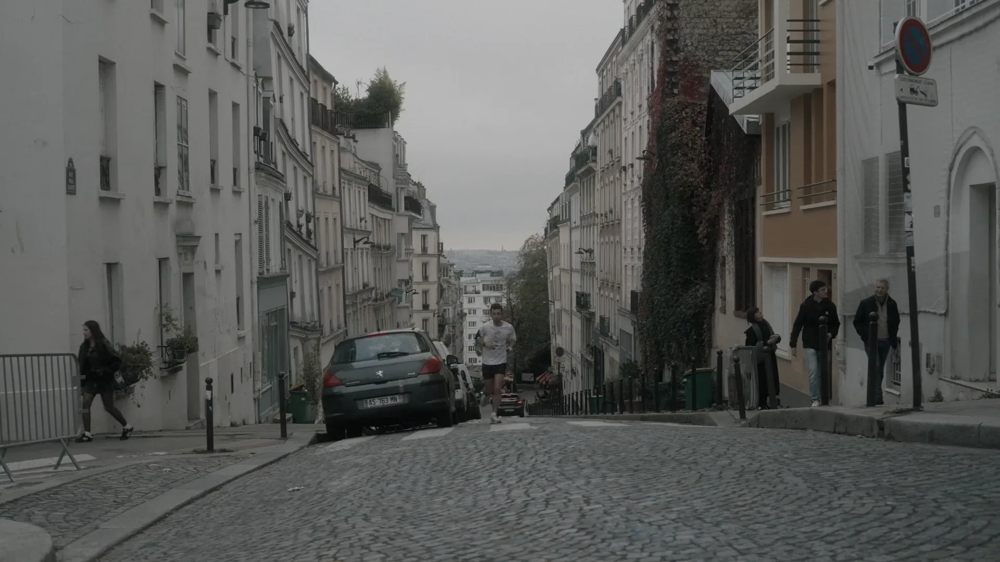
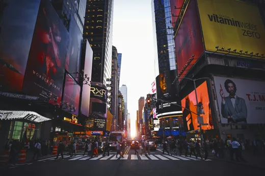
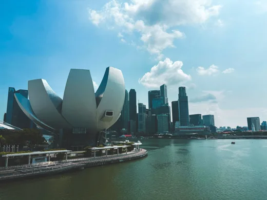
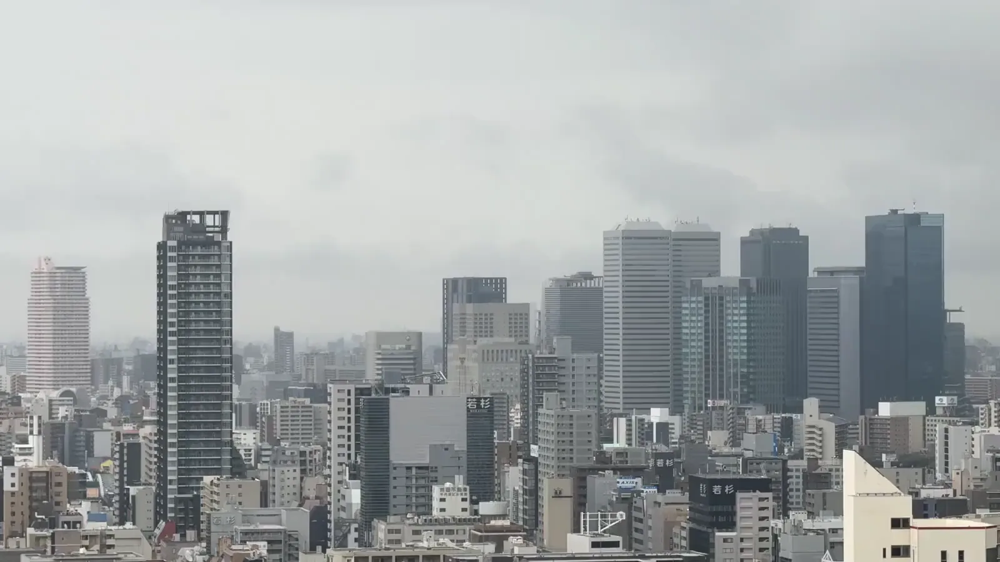
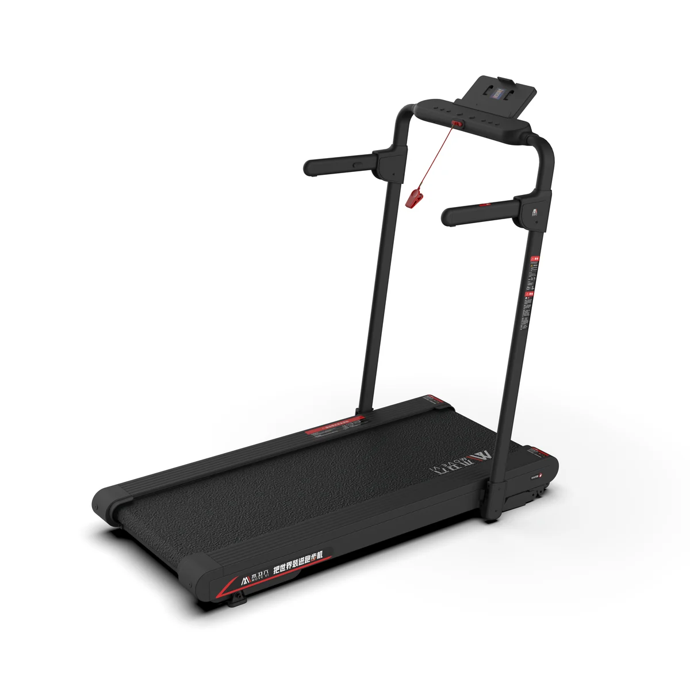
MOVEVI TS3从家出发，走向世界 ↗真实城市路线 × MOVEVI APP × 智能运动硬件
02 / 重新理解运动的动力
买下跑步机时，想改变生活。
日复一日，下一次开始却越来越难。
同一块屏幕，同一段计时，同一种重复。
一座想去的城市，一个想转过的路口。
健康的愿望还在。我们想找回的，是下一次出发的期待。
向下滚动，发现新的运动动力 ↓03 / 解决方案
城市实景、App 与智能运动硬件，把远方连接到你的每一步。
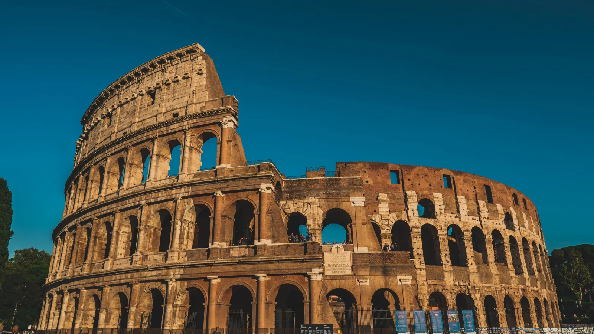
罗马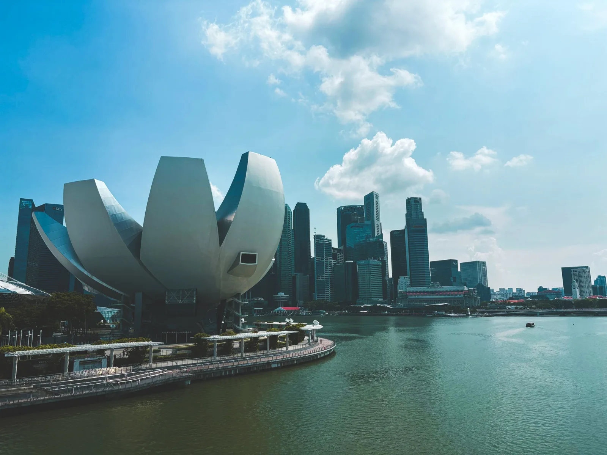
新加坡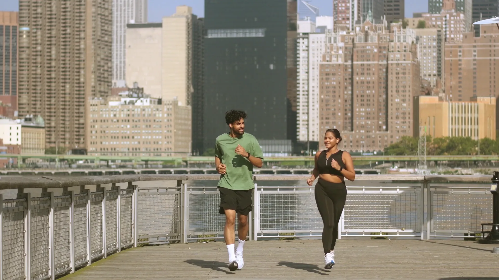
纽约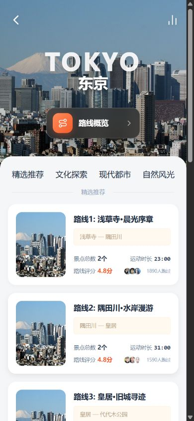
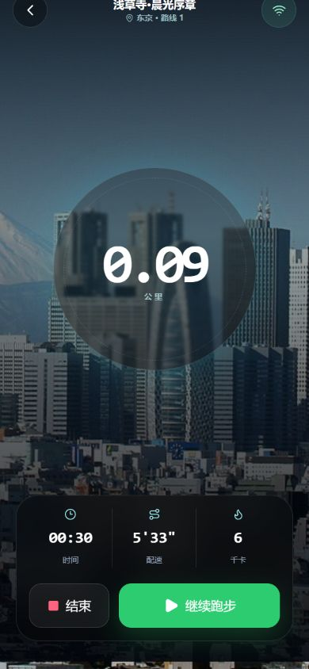
04 / 产品体系
想去哪里、如何出发、走了多远，每一步都有清楚的回应。
街道、路口与城市生活，
让风景成为目的地。
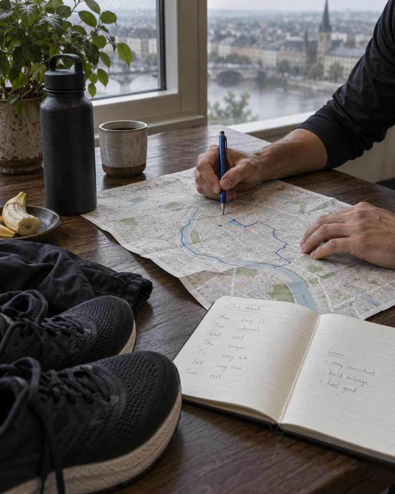
运动场景示意选择今天的路线，
安排适合自己的运动节奏。
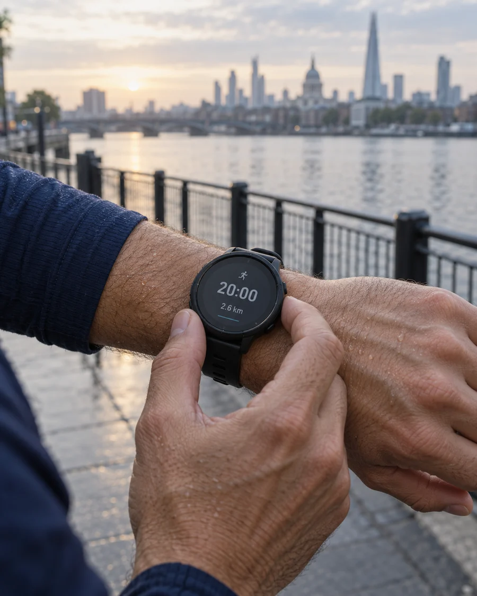
运动场景示意看见本次运动进度，
让投入变成可回看的记录。
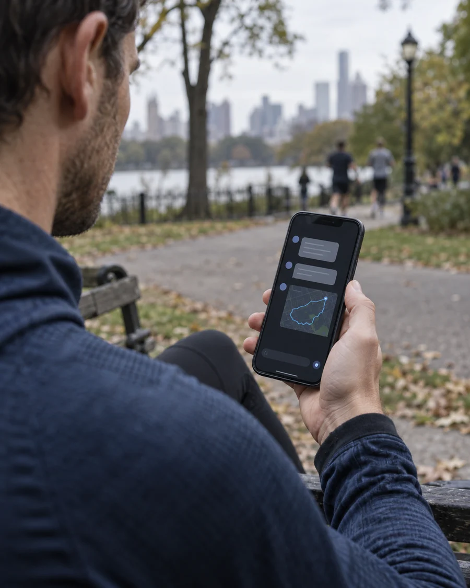
AI 辅助概念示意结合你的目标与运动节奏，
探索更适合你的路线建议。
产品体系与研发方向；具体功能、设备联动及可用内容以实际交付版本为准。
04 / 产品体系 · 为运动而设计
同一座城市，两种体验。
NEW YORK / 纽约
从观看风景，到带着运动方案出发。
跟随镜头观看，运动由自己安排。
从拍摄开始，关注运动时的视角与稳定性。
连续的城市路线，陪伴完整的运动过程。
让路线时长与节奏，融入步行、慢跑的安排。
沿着路线发现城市，让每一步都有新的期待。
城市影像为氛围素材；右侧为运动体验概念演示，非真实用户数据或已上线功能录屏。实际功能与开放路线以 App 为准。
05 / 全球内容战略
从熟悉的街道，到向往的远方。
在家就能开始，按自己的节奏前进。
把一次完成，变成下一次出发的起点。
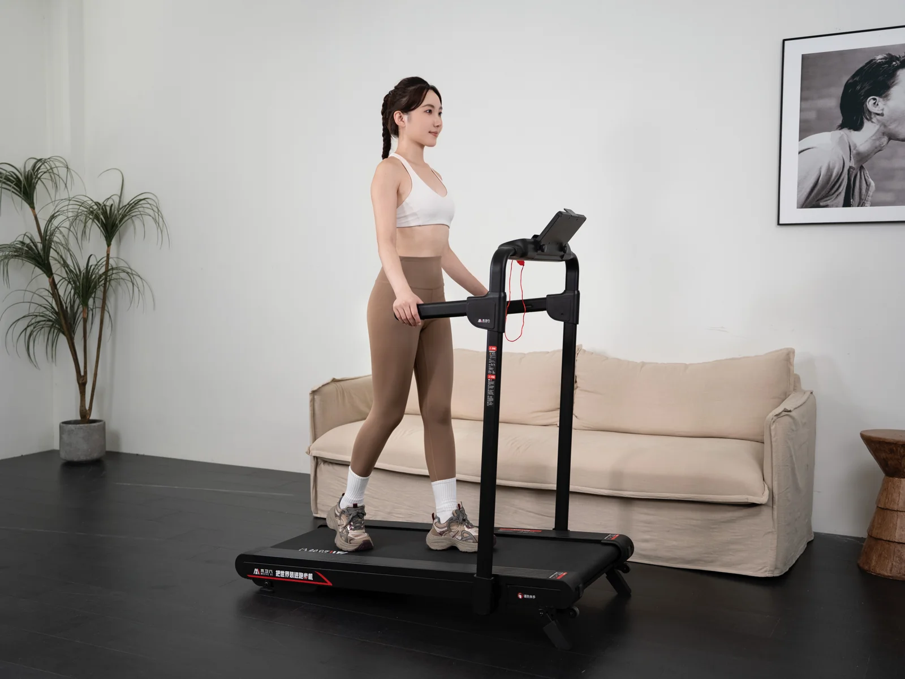
无需安排一次远行，也能看见陌生的街道。
为普通的一天，留下一点新的期待。
这是木卫六希望创造的体验价值。具体运动感受因人而异，不承诺特定减重或健康结果。
07 / 产品入口
从走步到快跑，让每一天都有自己的节奏。
TS3 / 02 MODELS产品图片包含实拍与渲染展示。选购前可联系客服确认在售配置、App 适配与体验安排。
08 / 用户评价 · COMMUNITY VOICES
关于开始、探索，和下一次出发。
下班回家，换上运动鞋就能走一会儿。忙的时候不勉强自己跑多远，按自己的节奏开始，反而轻松一些。
比起一直看倒计时，我更想看看下一个街角。今天看看巴黎，下一次想换座城市。
结束后看看走了多久、走了多远，觉得这一小段时间没有白过。先找到自己的节奏就好。
有时只想安静地走一会儿，不给自己定很高的目标。能在家开始，对我来说就方便了很多。
我喜欢留意沿途的小店和建筑。同一段运动时间，因为多看见了一点世界，感觉也不一样了。
状态好的时候跑一会儿，累的时候就慢慢走。我更喜欢适合自己的安排，而不是每次都追求更快。
喜欢先选一座想去的城市，再开始今天的运动。多了这个小小的选择，就像给周末安排了一次短途出发。
不急着和别人比较。回看自己的运动记录，知道最近有在认真给身体留时间，这件事就挺让人开心。
我需要的是一个容易融入日常的运动方式。不必每次都安排得很正式，空下来走一段，也算是照顾自己。
河边、街巷、桥上的风景，各有各的感觉。今天想轻松一些，就找一段看起来开阔的路线。
最喜欢的是不用一下子给自己太多压力。从一小段步行开始，觉得合适，再慢慢调整自己的运动安排。
一次运动结束以后，还会想下一次看看哪里。对我来说，愿意再开始，比这次一定要跑多远更重要。
评论与头像为示例，待真实用户反馈替换。
了解我们的价值观08 / 品牌信任与价值观
信任，来自一次次真实的使用。
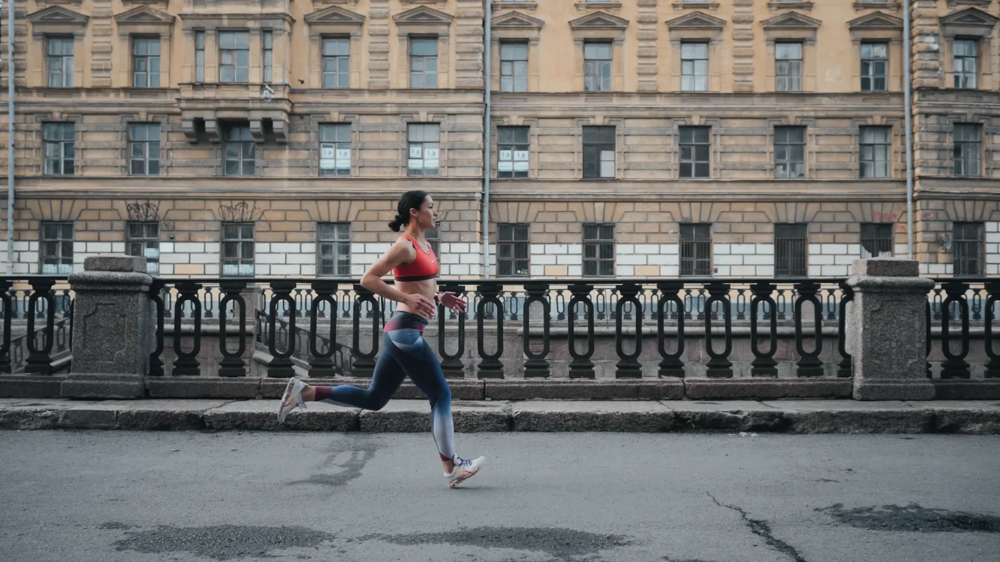
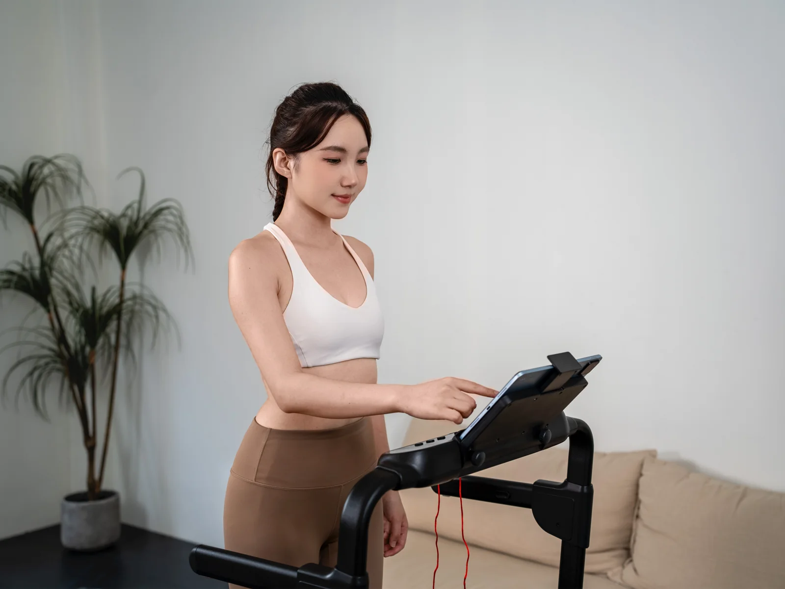
记录真实世界，拒绝用虚假的想象替代真实体验。
保留内容来源、城市与拍摄信息，让每一条路线有迹可循。永远保持好奇，把未知变成下一次出发的理由。
持续提供新的路线与发现，让下一站清楚可见。不追求一次性的刺激，而是持续创造让人愿意回来运动的价值。
关注重复使用与持续运动，让新鲜感之后仍有值得回来的理由。从真实运动体验出发，而不是从功能堆叠出发。
让选择、开始、运动与寻找下一站，都更简单顺畅。让技术降低运动门槛，而不是制造新的复杂。
操作简单，提示易懂；保留暂停、调整与退出的主动权。连接世界、内容创作者、城市、运动者与技术，让更多人参与建设这个全球运动世界。
尊重内容贡献者与城市文化，一起拓展探索的可能。一个目的地，能否让今天更容易迈出第一步。
新的发现，能否让运动更有吸引力。
结束之后，是否还期待下一次出发。
MOVEVI APP / 20 秒探索之旅
今天，跑哪座城市？首页快速滑动展示北京、上海、开罗、洛杉矶、新加坡与东京城市卡片。进入世界页，在地球上发现下一座心动的城市。全球城市收藏手册展示多座城市，并可按大洲筛选。MOVEVI APP：下一站，为好奇心出发。